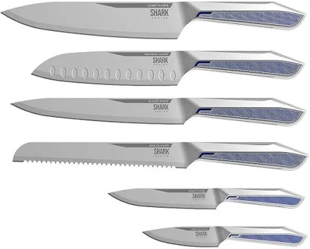

Kit Facas Inox
Peso e Dimensões
Dimensões Aproximadas da embalagem: 38,5 x 3,8 x 32 cmPeso Aproximado da embalagem: 1.834 kgChef KnifePeso: 183 gComprimento Total: 34 cmComprimento da Lâmina: 19,5 cmSlicer KnifePeso: 153 gComprimento Total: 34 cmComprimento da Lâmina: 19,5 cmBread KnifePeso: 158 gComprimento Total: 34 cmComprimento da Lâmina: 20 cmSantoku KnifePeso: 166 gComprimento Total: 30,5 cmComprimento da Lâmina: 16,5 cmUtility KnifePeso: 90 gComprimento Total: 23 cmComprimento da Lâmina: 12,5 cmParing KnifePeso: 100 gComprimento Total: 19 cmComprimento da Lâmina: 8,5 cm
Voltar